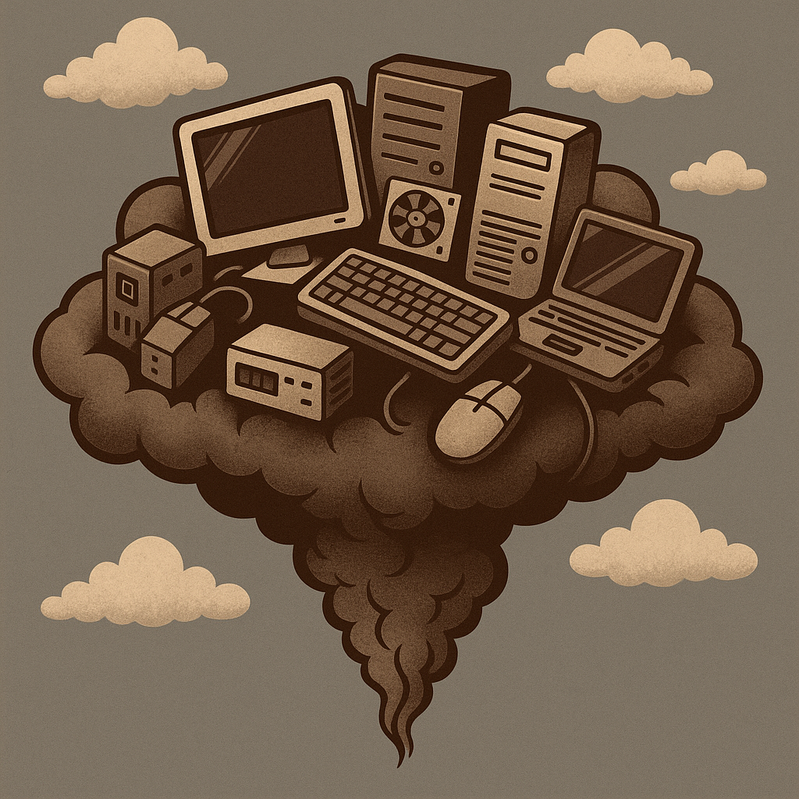
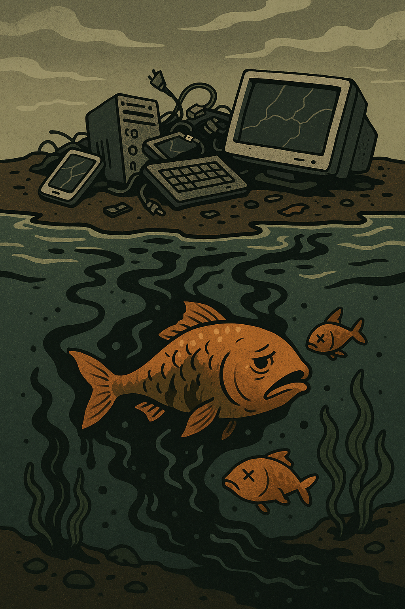

Prejuízos que o lixo eletrônico causa no Ar!

O lixo eletrônico, quando não devidamente descartado,
pode acabar em aterros inadequados para seu tratamento,
levando à sua incineração, muitas vezes a céu aberto.
Esse processo libera gases tóxicos, com dioxinas e furanos,
na atmosfera, contribuindo para o efeito estufa.
Segundo um relatório da ONU, o refinamento adequado do lixo eletrônico evitou]
a emissão de 93 toneladas de CO₂, ajudando no combate ao aquecimento global.
Ver Menos
Prejuízos que o lixo eletrônico causa no Solo!
De acordo com o artigo de Tanue (2015), o descarte inadequado do lixo eletrônico pode causar sérios danos ao solo.
Itens como celulares, baterias e computadores contêm metais pesados, como chumbo, mercúrio e arsênio,
que, ao serem jogados em lixões ou aterros comuns, se misturam com a água da chuva e formam o chorume.
Esse líquido altamente poluente pode infiltrar o solo, contaminando os lençóis freáticos e comprometendo a
qualidade da água utilizada na irrigação, na criação de animais e no consumo humano.
A longo prazo, essa contaminação pode tornar o solo menos fértil e prejudicar ecossistemas inteiros.
Ver Menos
Prejuízos que o lixo eletrônico causa no Água!

O descarte inadequado do lixo eletrônico libera substâncias químicas e metais pesados, contaminando o solo,
as águas subterrâneas e os cursos d'água. Isso compromete a qualidade da água potável e afeta a disponibilidade
desse recurso.
Quando o solo não consegue reter mais metais pesados, eles contaminam as águas subterrâneas e a cadeia alimentar.
Ver Menos